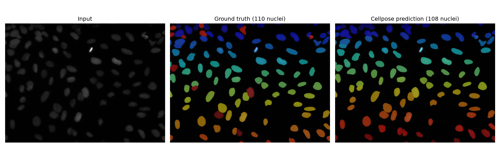
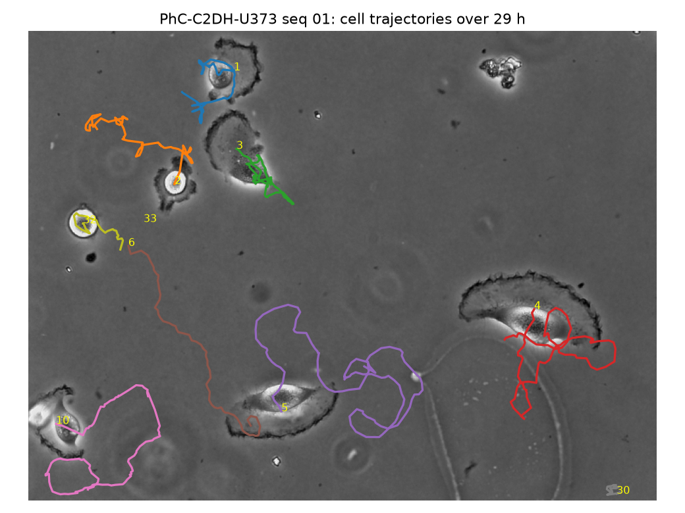
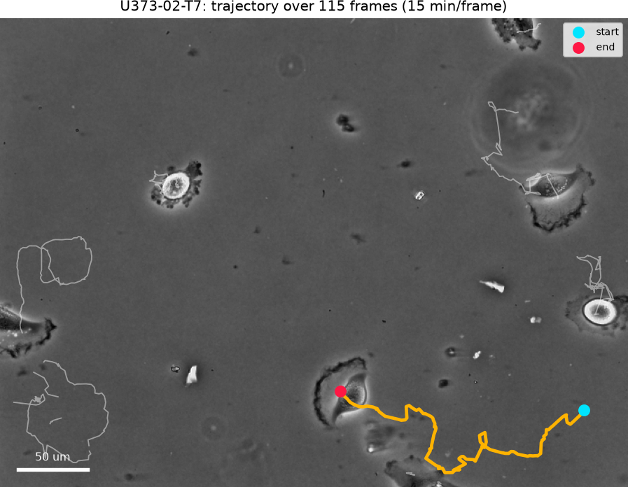

| Sprint step (dates) | Status | What was delivered |
|---|---|---|
| 1. Foundation (Sep 8–11) | Done | Cellpose 4.2.1.1 (pretrained cpsam_v2) on GPU; benchmark datasets BBBC039 + Cell Tracking Challenge PhC-C2DH-U373; evaluation code for IoU, Dice, precision, recall. |
| 2. First working Cell Atlas (Sep 12–16) | Done | Segmentation on all 200 BBBC039 images (the full dataset; the plan asked for 250–350) with first metrics. |
| 3. AI Microscopy (Sep 17–21) | Mostly done | Morphology extraction for 22,675 nuclei; metrics report with limitations. Overlay images exist, but a formal overlay handoff to the Software team is still open. |
| 4. Time-lapse + Biological Linking (Sep 22–25) | Done | Tracking and migration on U373 time-lapse; Image → Cell → Phenotype → Biological Entity chain for the CAF/CXCL12 case study with evidence levels. (Finished Sep 28, 3 days late.) |
| 5. Validation (Sep 26–28) | In progress | Per-phase validation reports exist (listed in section 9). The compact website version is not written yet. |
| 6. Final polish (Sep 29–30) | Not started | One-command demo, stability check, 90-second recording. |
Approach. Pretrained Cellpose model, used zero-shot (no fine-tuning), per the brief's direction to use proven models rather than train from scratch.
Benchmark. BBBC039: 200 fluorescence images of U2OS nuclei (Hoechst stain) with hand-annotated masks, CC0 license. Detection is scored by matching each predicted nucleus to a real one (Hungarian matching, IoU ≥ 0.5).
| Metric (mean over 200 images) | Value | Metric | Value |
|---|---|---|---|
| Pixel IoU | 0.942 ± 0.017 | Object precision | 0.980 |
| Pixel Dice | 0.970 ± 0.009 | Object recall | 0.966 |
| Nuclei: correct / false / missed | 22,212 / 463 / 766 | Object F1 | 0.972 |
| Inference time (RTX 5060) | 723 ms / image | Mean IoU of matched nuclei | 0.928 |

Limits. This measures nuclei in a DNA stain only. Whole-cell phase-contrast segmentation is scored separately in Phase 2 (CTC SEG 0.94 and 0.87).
Data. Cell Tracking Challenge PhC-C2DH-U373: phase-contrast time-lapse of glioblastoma-astrocytoma cells, 2 sequences × 115 frames (15 min/frame, 28.5 h each), with ground-truth tracks.
Method. Cellpose segments every frame. Cells are linked frame to frame by mask overlap (Hungarian matching), then brief segmentation flicker and short gaps are cleaned up. Each cell's migration distance, speed and directionality (net displacement ÷ path length) are measured.
| Seq | Detection precision | Detection recall | Link accuracy | ID switches | CTC SEG | Divisions (pred / real) | Mean speed µm/min (pred / real) |
|---|---|---|---|---|---|---|---|
| 01 | 0.928 | 0.999 | 0.999 | 1 | 0.940 | 1 / 0 | 0.183 / 0.205 |
| 02 | 0.857 | 0.987 | 0.995 | 3 | 0.867 | 1 / 0 | 0.137 / 0.158 |

Features were measured from the segmentation masks for 22,675 nuclei (BBBC039) and for every tracked U373 cell in every frame. All of these are direct measurements from segmented pixels.
| Feature (BBBC039 nuclei) | Mean ± SD | Feature | Mean ± SD |
|---|---|---|---|
| Area (px) | 627 ± 256 | Aspect ratio | 1.71 ± 0.61 |
| Perimeter (px) | 95.0 ± 23.6 | Solidity | 0.958 ± 0.025 |
| Circularity | 0.830 ± 0.092 | Mean intensity | 648 ± 217 |
| Eccentricity | 0.746 ± 0.138 | Texture (GLCM) | contrast, homogeneity, energy, correlation |
Migration distance, speed and division events come from Phase 2.
Not computed: nuclear/cytoplasmic ratio. It needs paired nucleus and cytoplasm channels, and neither dataset has both. It is reported as missing rather than approximated.
Approach. No labelled data exists for the five target classes, so classification is a set of transparent threshold rules, not a trained model. Each label records the rule that produced it. Its score is a rule margin: how far the deciding measurement is from its threshold. This is not a probability.
| Class | Rule |
|---|---|
| Migrating | Net displacement ≥ 1 own cell diameter over ≥ 20 frames (5 h) |
| Quiescent | Net displacement < 0.5 cell diameter over ≥ 20 frames, no division. An operational definition: true cell-cycle arrest is not visible in phase contrast. |
| Proliferating | Cell divides and both daughters persist ≥ 3 frames |
| Apoptotic/dead | Time-lapse: shrinks to ≤ 60% of its usual area and rounds up over its last 2 h. Single images: small, very bright nucleus (pyknotic-like). |
| Abnormal morphology | Area, circularity or solidity is a strong outlier in its population (robust z ≥ 3.5) |
Results, U373 time-lapse (22 tracked cells): 10 migrating, 2 quiescent, 1 apoptotic/dead, 1 proliferating, 4 abnormal morphology, 10 indeterminate (track too short, or moved between 0.5 and 1 diameter). A cell can carry more than one label.
Results, BBBC039 single images (22,675 nuclei): only shape-based classes can be judged from one image. 2,102 nuclei were flagged abnormal morphology and 413 apoptotic-like. Another 4,430 are cut by the image edge and were not classified.
Case study choice. The sprint plan names CAF/CXCL12. The brief's other example, A549 → EGFR, would need A549 imaging we don't have. The public U373 migration movies fit the CXCL12/CXCR4 literature on glioma cell migration, so the chain was built on them.
Three evidence levels, never merged:

Literature base. A curated knowledge base of 5 papers. Every statement was checked against the paper's PubMed abstract.
| Link | Source |
|---|---|
| CXCR4 on glioma cells; CXCL12 drives chemotaxis | Zhou et al., J Biol Chem 2002 (PMID 12388552) |
| CXCR4 mediates glioma invasion toward CXCL12 | Ehtesham et al., Oncogene 2006 (PMID 16407848) |
| CXCL12/CXCR4 rise with glioma grade | Rempel et al., Clin Cancer Res 2000 (PMID 10656438) |
| CAFs secrete CXCL12 acting via CXCR4 | Orimo et al., Cell 2005 (PMID 15882617). Shown in breast carcinoma, not glioma. |
| Caveat: cell line identity | Torsvik et al., Cancer Med 2014 (PMID 24810477). Many "U-373" stocks are actually U-251. |
Every AI-derived value in the output points to a model card with the six fields the brief requires. Benchmark numbers are read directly from the Phase 1–2 result files.
| Component | Model / version | Confidence shown | Evaluated on / metric | Main limitation |
|---|---|---|---|---|
| Segmentation | Cellpose cpsam_v2, v4.2.1.1 | Per cell: mean Cellpose cell probability | BBBC039 IoU 0.942, P 0.980, R 0.966; U373 SEG 0.94 / 0.87 | Score is uncalibrated; only two datasets tested |
| Tracking | Overlap tracker, code 44ec666 | Per track: mean mask overlap between frames | U373 link accuracy 0.999 / 0.995 | Division recall unmeasured |
| Phenotype rules | Rules v0.1.0 | Per label: rule margin | 10/14 agreement with ground-truth trajectories | No expert labels |
| Literature links | Knowledge base v0.1.0 | Citation per statement | Checked against PubMed abstracts | Only "migrating" has links so far |
The per-cell output (reports/phase5_cell_atlas_u373.json) lists every tracked cell with its
measurements, labels, literature links and hypotheses. Each item is tagged with its evidence level and model card.
| When | Work |
|---|---|
| Sep 29 | Compact validation report for the website; one-command demo (image → cells → phenotype → linked biology); segmentation overlay package for the Software team. |
| Sep 30 | Stability run of the demo; 90-second video recording. |
| Oct 1 | Release. |
Open items for the team:
github.com/Maksatb07/biolayers-ai and can be moved to a shared team repository.Per-phase reports in the repository: phase1_validation_report.md,
phase2_tracking_report.md, phase3_phenotype_report.md,
phase4_classification_report.md, phase5_6_case_study_report.md (all in reports/).